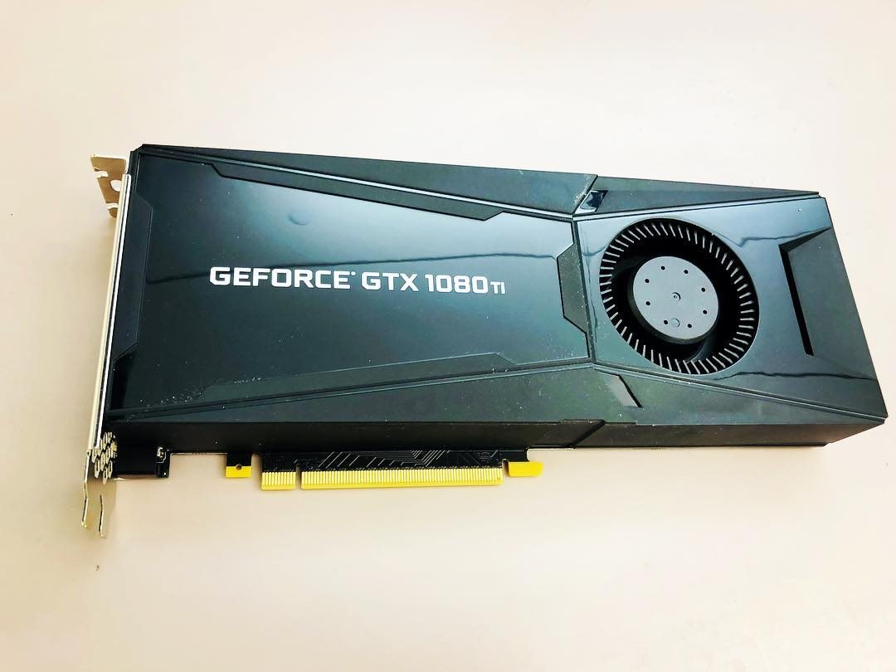
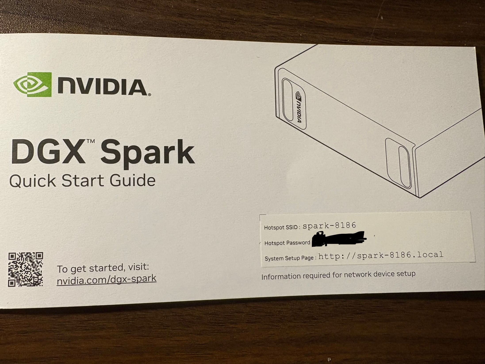
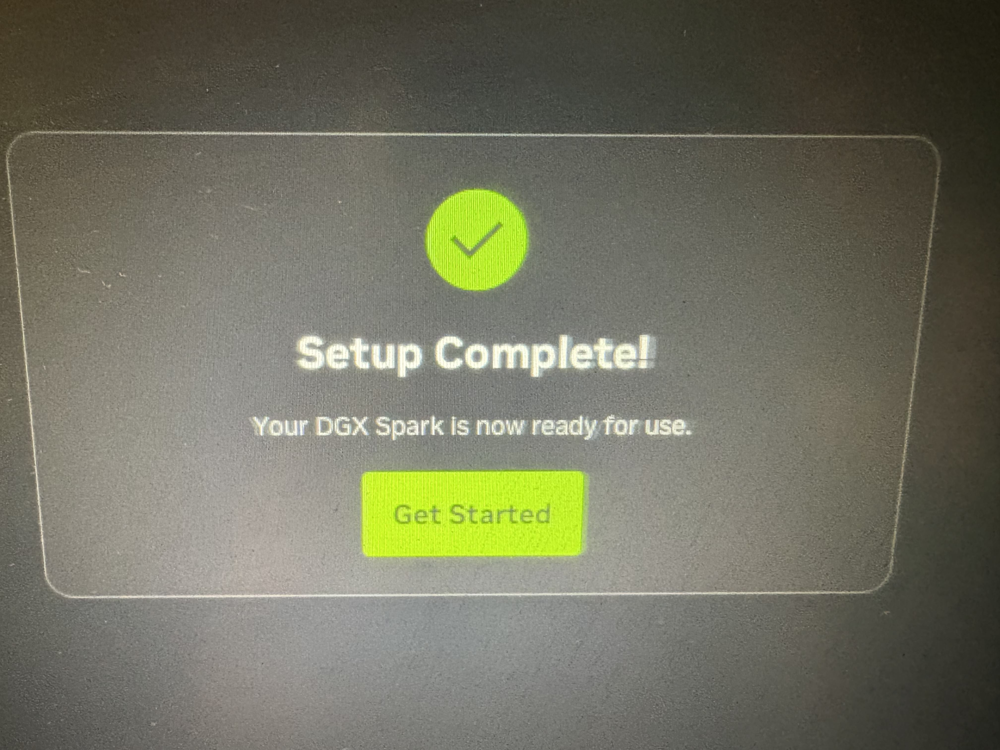

Introduction: Meet the DGX Spark
The NVIDIA DGX Spark, launched in October 2025, represents a significant leap in making enterprise-grade AI infrastructure accessible to individual developers and researchers. This compact AI supercomputer packs an impressive 1 petaFLOP of AI performance into a desktop form factor, powered by the NVIDIA GB10 Grace Blackwell Superchip. At its heart, the system features a 20-core Arm processor (10 Cortex-X925 performance cores and 10 Cortex-A725 efficiency cores) paired with 128GB of unified memory that’s seamlessly shared between the CPU and GPU. This unified memory architecture is particularly powerful for AI workloads, allowing the system to run inference on models with up to 200 billion parameters and fine-tune models up to 70 billion parameters locally. With 4TB of solid-state storage and dual QSFP Ethernet ports providing 200 Gb/s of aggregate bandwidth, the DGX Spark at $3,999 brings what was once exclusive to data centers right to your desk.
A Personal Note: From GTX 1080 Ti to Grace Blackwell
My journey with GPUs began back in October 2017, when I was setting up my lab’s computer with an NVIDIA GTX 1080 Ti. It was time I was persuing a PhD (1st year). That experience introduced me to the world of GPU-accelerated computing and sparked my interest in leveraging specialized hardware for computational tasks. Fast forward eight years, and the DGX Spark represents my second foray into GPU ownership—though calling it just a “GPU” would be a significant understatement. While the GTX 1080 Ti was a powerful graphics card in its time, the DGX Spark is an entirely different beast: a complete AI supercomputer that integrates CPU, GPU, and unified memory into a cohesive system designed specificallyfor AI workloads. The evolution from a single GPU card to this integrated Grace Blackwell architecture reflects not just technological progress, but also the democratization of AI infrastructure that was once accessible only to large research institutions and tech giants


Evolution of GPU Computing: A Side-by-Side Comparison
The eight-year gap between these two systems tells a remarkable story of technological advancement, particularly in the shift from graphics-focused GPUs to AI-specialized computing platforms.
| Specification | GTX 1080 Ti (2017) | DGX Spark (2025) | Evolution |
|---|---|---|---|
| Architecture | Pascal (16nm) | Grace Blackwell GB10 (3nm) | Integrated CPU-GPU superchip design |
| CPU Cores | Host system dependent | 20 Arm cores (10 X925 + 10 A725) | Integrated high-performance CPU |
| CUDA Cores | 3,584 | 6,144 | 71% increase in CUDA cores |
| Tensor Cores | None | 192 (5th generation) | AI-optimized matrix operations |
| Memory Capacity | 11 GB GDDR5X | 128 GB LPDDR5x Unified | 11.6× increase in capacity |
| Memory Architecture | Dedicated GPU memory | CPU-GPU unified coherent memory | Seamless sharing eliminates data transfer overhead |
| Memory Bandwidth | 484 GB/s | 273 GB/s unified | Coherent memory access across CPU-GPU |
| FP32 Performance | 11.5 TFLOPS | 31 TFLOPS | 2.7× increase in traditional compute |
| AI Performance | ~11.5 TFLOPS (FP32 only) | 1,000 TOPS (FP4) 1 PETAFLOP |
~87× increase with AI-optimized precision |
| Precision Support | FP32, FP16 | FP32, FP16, FP8, NVFP4, MXFP8 | Multi-precision for optimal AI inference |
| Model Capacity | Limited by 11GB | 200B parameters (inference) 70B parameters (fine-tuning) |
Native support for frontier models |
| Power Consumption | 250W | 140W TDP (240W with accessories) | Dramatically more efficient |
| Primary Use Case | Gaming & Graphics | AI Development & Inference | Purpose-built for AI/ML workflows |
| Price at Launch | ~$699 | $3,999 | Premium for integrated AI platform |
| Form Factor | PCIe Graphics Card | Complete Desktop System | Self-contained AI workstation |
Key Architectural Breakthroughs
Unified Memory Revolution: The most significant advancement is the shift from discrete GPU memory to unified coherent memory. The GTX 1080 Ti required explicit data transfers between system RAM and GPU memory, creating bottlenecks. The DGX Spark’s 128GB unified memory is seamlessly accessible to both CPU and GPU, eliminating these transfers and enabling efficient processing of models that were impossible on traditional GPUs.
Fifth-Generation Tensor Cores: Perhaps the most transformative feature is the inclusion of 192 fifth-generation Tensor Cores—technology completely absent from the GTX 1080 Ti. Tensor Cores are specialized processing units designed specifically for the matrix multiplication operations that dominate neural network training and inference. Each Tensor Core can perform multiple operations per clock cycle on matrices, dramatically accelerating AI workloads compared to traditional CUDA cores.
What makes the fifth-generation Tensor Cores in the DGX Spark particularly powerful is their tight integration with 256KB of Tensor Memory (TMEM) per Streaming Multiprocessor (SM). This keeps frequently accessed data close to the compute units, minimizing memory latency and maximizing throughput. The Blackwell architecture features four Tensor Cores per SM, optimized specifically for transformer-based models that have become the foundation of modern AI.
Transformer Engine and Multi-Precision Support: The DGX Spark includes NVIDIA’s second-generation Transformer Engine, a game-changing feature for LLM inference and fine-tuning. While the GTX 1080 Ti was limited to FP32 and FP16 precision, the DGX Spark supports a range of precision formats optimized for different AI tasks:
- FP32 (32-bit): Traditional floating-point for general computing (31 TFLOPS)
- FP16 (16-bit): Half-precision for training and inference
- FP8 (8-bit): Introduced with H100, using E4M3 and E5M2 variants for efficient AI operations
- MXFP8: Blackwell’s microscaling FP8 format with block-level scaling factors for improved accuracy
- NVFP4 (4-bit): Blackwell’s proprietary 4-bit floating-point format using two-level scaling, achieving near-FP8 accuracy while reducing memory footprint by 1.8× and enabling 1 PETAFLOP of AI performance
The Transformer Engine dynamically selects the optimal precision for each layer during inference, balancing accuracy and performance. For LLM inference, FP4 precision delivers massive throughput gains—enabling the 87× performance advantage over FP32-only systems—while maintaining acceptable accuracy for most use cases. This is why the DGX Spark can handle 200B parameter models that would be impossible on the GTX 1080 Ti’s 11GB of memory.
Integration vs. Component: The GTX 1080 Ti was a component requiring a host system, while the DGX Spark is a complete, integrated platform with CPU, GPU, storage, and networking designed to work in harmony for AI workloads. The NVLink-C2C chip-to-chip interconnect provides high-bandwidth, low-latency communication between the Grace CPU and Blackwell GPU, enabling the unified memory architecture that eliminates traditional PCIe bottlenecks.
Setting up DGX Spark after Unpacking
After unboxing DGX Spark, first thing stands out to me its portability. Its compact and simple to set up and then paired with a Mac book (or any other computer). Before setting up, we need to see the ports of DGX Spark. Lets have a look at the ports of DGX Spark in the diagram below:

First step is to connect the one end of the power adapter to the Power port and other end to power supply (socket). Click the the On/Off button and that’s it. One thing I need to mention that there is no led light indicating if the device is turned on or off. The only way to find out if its on is by detecting the Hotspot in the Wifi . The info of the Hotspot can be found on the cover of Quick Start Guide.

Once connected with the HotSpot the set up is inititated and just need to follow the the instruction . At some point it will identify the orginal Wifi you are connected in . Then it may initiate a few updates of the firmware and reboots . No human interventions needed .

After the complition of the set up its going to direct you to the spark page
Connecting to DGX Spark on Your Local Network
Before diving into running LLMs, it’s essential to establish reliable network access to your DGX Spark. While the initial setup happens over the device’s WiFi hotspot, for day-to-day work you’ll want to connect to your DGX Spark over your local network via SSH. This gives you command-line access and the ability to tunnel ports for accessing web applications.
Prerequisites
First, verify that you have an SSH client installed. Most modern operating systems (Linux, macOS, Windows 10+) include SSH by default:
ssh -VYou’ll need the following information: - Username: Your DGX Spark account name (created during initial setup) - Password: Your account password - Hostname: Your device’s mDNS hostname (typically spark-xxxx.local) - IP Address: As a backup if mDNS doesn’t work on your network
Finding Your DGX Spark on the Network
The DGX Spark uses mDNS (multicast DNS) for easy discovery on local networks. Your hostname format is typically spark-xxxx.local where xxxx is a unique identifier.
Test if mDNS resolution works on your network:
ping spark-abcd.localReplace spark-abcd with your actual hostname. If you see ping responses with IP addresses and latency measurements, mDNS is working correctly.
If you get “Cannot resolve hostname” or “Unknown host” errors, your network doesn’t support mDNS (common in corporate networks). In this case, you’ll need to find your DGX Spark’s IP address through your router’s admin panel or by connecting a display directly to the device.
Establishing SSH Connection
Once you have your hostname or IP address, connect via SSH:
Using mDNS hostname:
ssh <username>@<spark-hostname>.localUsing IP address (if mDNS fails):
ssh <username>@<ip_address>For example:
ssh dipankar@spark-a1b2.localOn your first connection, you’ll see a host fingerprint warning. Type yes to accept and add the host to your known hosts file, then enter your password.
Verifying Your Connection
Once connected, verify you’re on the correct device:
hostname # Should show your DGX Spark hostname
uname -a # Shows system information
nvidia-smi # Check GPU status (if available)Type exit to close the SSH session.
SSH Port Forwarding for Web Applications
One of the most powerful features of SSH is port forwarding, which allows you to access web applications running on your DGX Spark as if they were running on your local machine. This is crucial for accessing services like Open WebUI, Jupyter notebooks, or monitoring dashboards.
For example, to access a web service running on port 8080 on your DGX Spark:
ssh -L 8080:localhost:8080 <username>@<spark-hostname>.localNow, opening http://localhost:8080 in your browser will connect to the service running on your DGX Spark. The -L flag creates a local port forward, tunneling traffic from your local port 8080 to the DGX Spark’s port 8080.
You can forward multiple ports in a single SSH session:
ssh -L 8080:localhost:8080 -L 11000:localhost:11000 <username>@<spark-hostname>.localThis is particularly useful when running Open WebUI (typically on port 8080) alongside other monitoring or development tools.
Troubleshooting Network Access
mDNS not working? - Check if your router supports mDNS/Bonjour - Try connecting from a different network segment - Use the IP address directly instead - On corporate networks, consult with IT about mDNS availability
Can’t find the IP address? - Check your router’s DHCP client list - Connect a monitor and keyboard directly to the DGX Spark - Use network scanning tools like nmap or arp-scan
Connection refused or timeout? - Verify the DGX Spark is powered on and connected to WiFi - Check firewall settings on both machines - Ensure you’re on the same network subnet
With network access established, you’re ready to start deploying AI workloads on your DGX Spark.
Running Local LLMs: Setting Up Open WebUI and Ollama
With the DGX Spark hardware setup complete, it’s time to put this AI supercomputer to work. The real power of the DGX Spark lies in its ability to run large language models locally, giving you full control over your AI infrastructure without relying on external APIs. In this section, I’ll walk through setting up Open WebUI with Ollama using Docker, and then demonstrate how to interact with these models programmatically using Python.
Why Open WebUI and Ollama?
Ollama provides a simple, efficient way to run large language models locally. It handles model management, optimization, and inference, making it easy to work with models ranging from small 7B parameter models to the 200B parameter models that the DGX Spark can handle.
Open WebUI offers a clean, ChatGPT-like interface for interacting with Ollama models. More importantly, it exposes an OpenAI-compatible API, which means you can use familiar tools and libraries to interact with your local models as if they were OpenAI’s GPT models.
Step 1: Setting Up Docker Access
Before we begin, we need to ensure Docker is properly configured. First, check if you have Docker access:
docker psIf you encounter permission errors, add your user to the docker group:
sudo usermod -aG docker $USER
newgrp dockerStep 2: Deploying Open WebUI with Ollama
The beauty of this setup is its simplicity. Open WebUI provides a container image with Ollama integrated, eliminating the need for separate installations.
Pull the container image:
docker pull ghcr.io/open-webui/open-webui:ollamaLaunch the container with GPU support and persistent storage:
docker run -d -p 8080:8080 --gpus=all \
-v open-webui:/app/backend/data \
-v open-webui-ollama:/root/.ollama \
--name open-webui ghcr.io/open-webui/open-webui:ollamaThe --gpus=all flag is crucial—it gives the container access to the DGX Spark’s powerful Grace Blackwell GPU. The two volume mounts ensure that your application data and downloaded models persist across container restarts.
Once running, navigate to http://<spark-ip>:8080 in your browser. You’ll be greeted with a setup screen where you can create your administrator account.
Step 3: Downloading Your First Model
Through the Open WebUI interface, you can access Ollama’s extensive model library. For my first test, I downloaded the gpt-oss:20b model—a 20 billion parameter open-source model that showcases the DGX Spark’s capability to handle frontier-scale models locally.
The download process happens directly on your DGX Spark, leveraging the 4TB of storage. Depending on the model size and your network speed, this can take several minutes, but the unified 128GB memory architecture means these large models can run entirely in RAM without swapping to disk.
Step 4: Interacting with Models via Python
While the web interface is great for interactive chat, the real power comes from programmatic access. I created a Python client to interact with the Ollama models running on the DGX Spark through Open WebUI’s OpenAI-compatible API.
Here’s the setup process I followed (you can find the complete code in my DGX_ollama repository):
1. Clone and set up the environment:
git clone https://github.com/daddyofadoggy/DGX_ollama.git
cd DGX_ollama
python3 -m venv myvenv
source myvenv/bin/activate
pip install -r requirements.txt2. Configure authentication:
Create a .env file with your API key (generated from the Open WebUI settings):
OLLAMA_KEY=your_api_key_here3. The Python client:
The implementation is remarkably simple thanks to the OpenAI-compatible API:
from openai import OpenAI
import os
from dotenv import load_dotenv
load_dotenv()
client = OpenAI(
base_url="http://10.0.0.194:8080/ollama/v1",
api_key=os.getenv("OLLAMA_KEY")
)
response = client.chat.completions.create(
model="gpt-oss:20b",
messages=[
{"role": "user", "content": "Explain the benefits of unified memory architecture for LLM inference"}
],
)
print(response.choices[0].message.content)This code looks identical to how you’d interact with OpenAI’s API, but it’s hitting your local DGX Spark instead. The model runs entirely on your hardware, leveraging those 192 Tensor Cores and the unified memory architecture we discussed earlier.
What Makes This Setup Powerful
The combination of DGX Spark’s hardware capabilities and this software stack creates a remarkably powerful local AI development environment:
Privacy and Control: Your data never leaves your machine. For sensitive applications or proprietary data, this is invaluable.
No API Costs: Once you’ve invested in the DGX Spark, there are no per-token charges. Run as many inferences as you want.
Customization: You can fine-tune models on your own data, experiment with different quantization levels, and optimize for your specific use cases.
Low Latency: No network round trips to external APIs. With the unified memory architecture, inference happens at local GPU speeds.
OpenAI-Compatible Interface: Existing code using OpenAI’s SDK works with minimal modifications—just change the base URL and API key.
In my initial experiments, the DGX Spark handled the 20B parameter model effortlessly, with inference times that rival cloud-based solutions. The Transformer Engine’s dynamic precision selection and those fifth-generation Tensor Cores make a noticeable difference in real-world performance.
Cleaning Up After Experiments
When you’re done experimenting or want to free up resources, it’s important to properly clean up your Docker containers and volumes. Here’s how to do it systematically:
1. Stop the running container:
docker stop open-webui2. Remove the container:
docker rm open-webui3. (Optional) Remove the volumes:
If you want to completely start fresh and remove all data including downloaded models, you can delete the volumes. Warning: This will delete all your settings, chat history, and downloaded models.
docker volume rm open-webui
docker volume rm open-webui-ollama4. (Optional) Remove the Docker image:
To free up disk space, you can also remove the Docker image itself:
docker rmi ghcr.io/open-webui/open-webui:ollama5. Verify cleanup:
Check that everything has been removed:
# Check for running containers
docker ps -a | grep open-webui
# Check for volumes
docker volume ls | grep open-webui
# Check for images
docker images | grep open-webuiPro Tip: If you want to preserve your models but clean up the application data, you can selectively remove only the open-webui volume while keeping open-webui-ollama. This way, you won’t need to re-download large models if you decide to set up Open WebUI again later.
References
Official NVIDIA Documentation
NVIDIA DGX Spark Product Page https://www.nvidia.com/en-us/products/workstations/dgx-spark/
NVIDIA DGX Spark Arrives for World’s AI Developers | NVIDIA Newsroom https://nvidianews.nvidia.com/news/nvidia-dgx-spark-arrives-for-worlds-ai-developers
Hardware Overview — DGX Spark User Guide https://docs.nvidia.com/dgx/dgx-spark/hardware.html
NVIDIA Blackwell Architecture https://www.nvidia.com/en-us/data-center/technologies/blackwell-architecture/
Inside NVIDIA Blackwell Ultra | NVIDIA Technical Blog https://developer.nvidia.com/blog/inside-nvidia-blackwell-ultra-the-chip-powering-the-ai-factory-era/
Using FP8 and FP4 with Transformer Engine — NVIDIA Documentation https://docs.nvidia.com/deeplearning/transformer-engine/user-guide/examples/fp8_primer.html
Hardware Specifications
NVIDIA DGX Spark features 6144 CUDA cores | VideoCardz https://videocardz.com/newz/nvidia-dgx-spark-features-6144-cuda-cores-just-as-many-as-rtx-5070
NVIDIA Dissects GB10 Superchip | WCCFtech https://wccftech.com/nvidia-gb10-superchip-soc-3nm-20-arm-v9-2-cpu-cores-nvfp4-blackwell-gpu-lpddr5x-9400-memory-140w-tdp/
NVIDIA GeForce GTX 1080 Ti Specs | TechPowerUp https://www.techpowerup.com/gpu-specs/geforce-gtx-1080-ti.c2877
Official nVidia GTX 1080 Ti Specs | GamersNexus https://gamersnexus.net/news-pc/2820-official-nvidia-gtx-1080-ti-specs-announced
Setup Guides and Tools
Open WebUI with Ollama Setup Guide for DGX Spark https://build.nvidia.com/spark/open-webui/instructions
Connect to Your DGX Spark via SSH https://build.nvidia.com/spark/connect-to-your-spark/manual-ssh
DGX Ollama Python Client | GitHub Repository https://github.com/daddyofadoggy/DGX_ollama
Setting Up Open WebUI on DGX Spark | YouTube Tutorial https://www.youtube.com/watch?v=yOgNv4HrYZ4
Reviews and Analysis
NVIDIA DGX Spark In-Depth Review | LMSYS Org https://lmsys.org/blog/2025-10-13-nvidia-dgx-spark/
NVIDIA DGX Spark Review | IntuitionLabs https://intuitionlabs.ai/articles/nvidia-dgx-spark-review